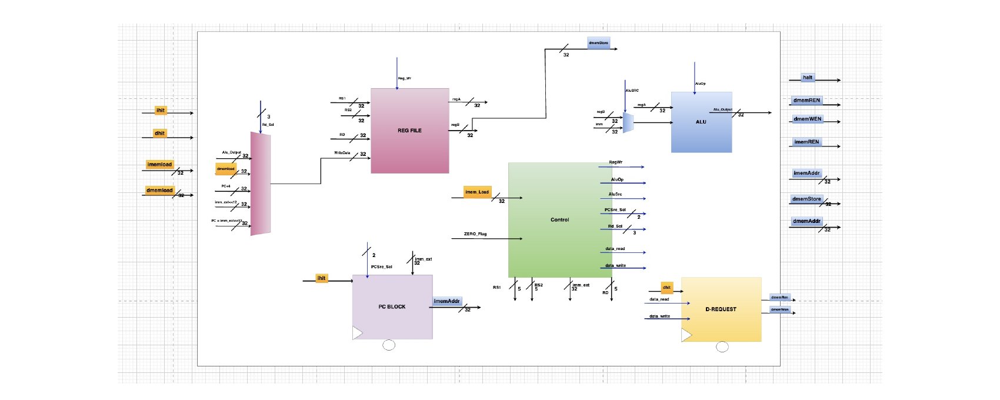
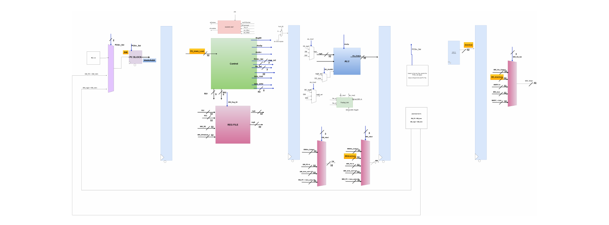
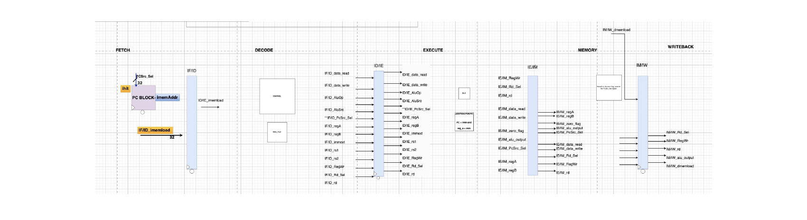
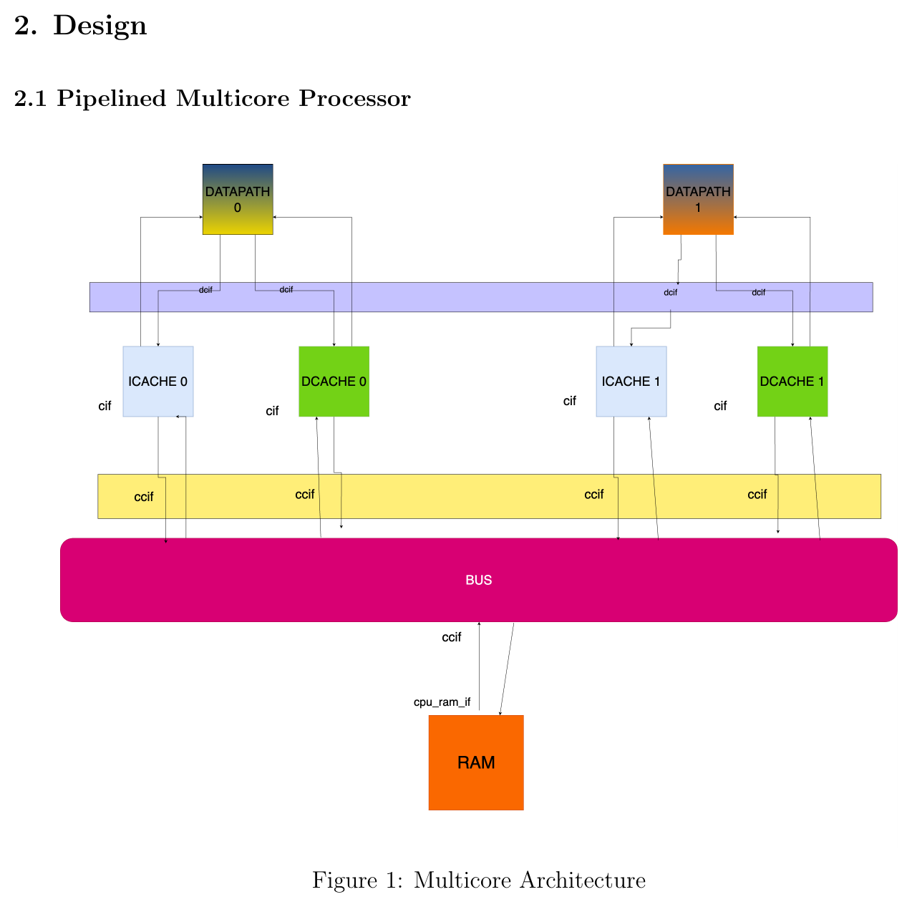
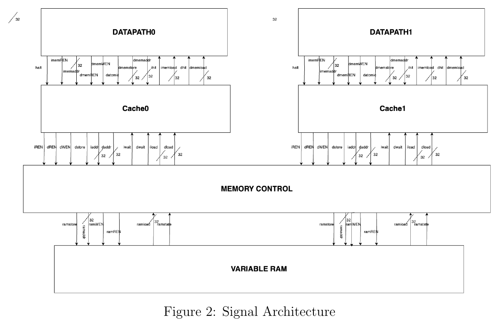
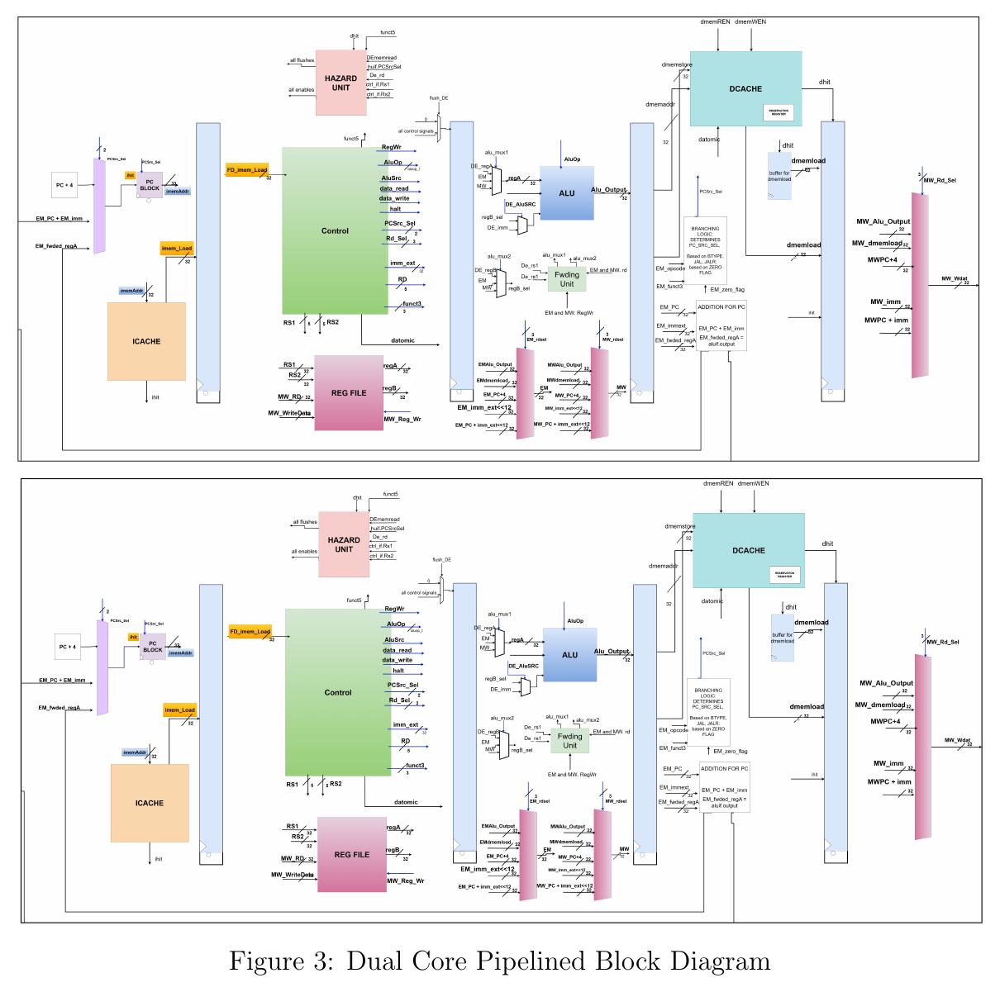
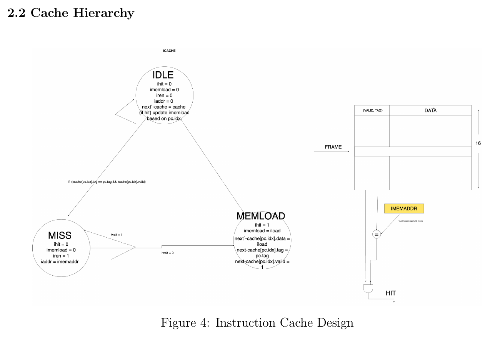
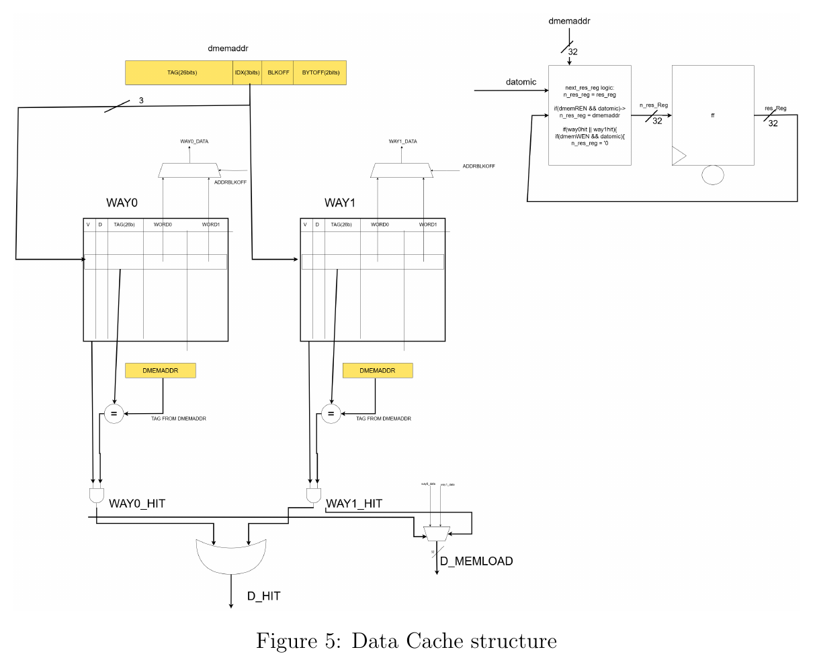
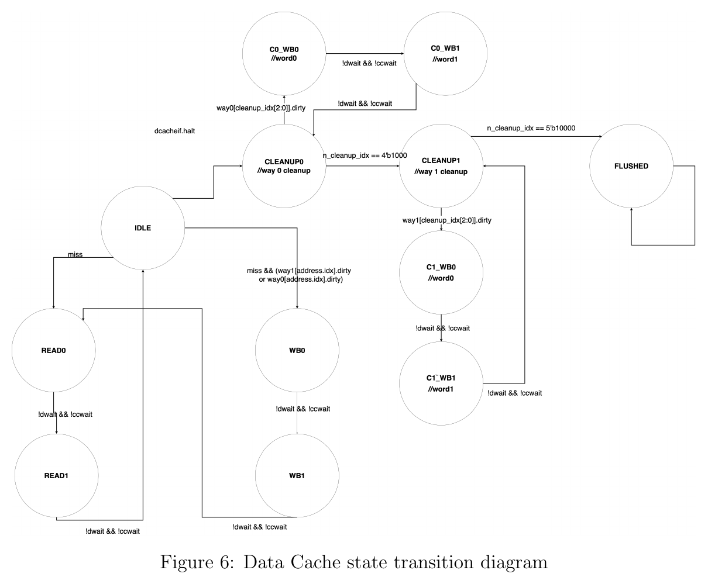
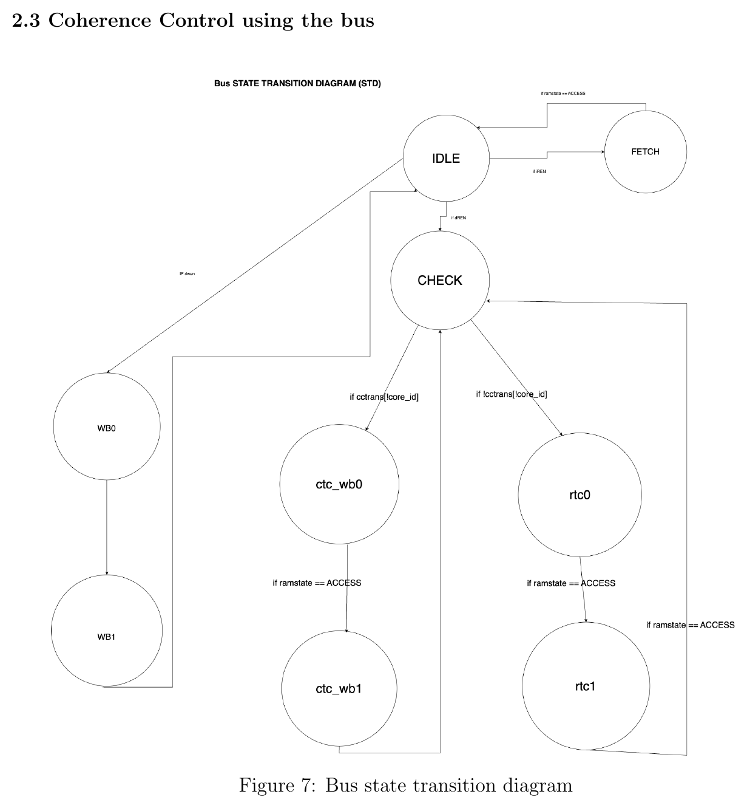

Below is the formatted final report (which got an A), plus the midterm comparison of the single-cycle vs. pipelined design. The core was verified against custom testbenches covering, among others:
- Merge sort & dual-threaded merge sort (main benchmark)
- Fibonacci sequence
- Linear search
- Booth's encoding multiplication
- Number of days between two dates
- CRC checksum subroutine
- MSI coherence transitions (3 dedicated tests) and dual-core LR/SC atomics
- Every branch instruction, taken and not-taken, plus load/control hazard edge cases
Overview
This report compares four processor variants built on the same RV32I subset: a single-cycle processor, a pipelined processor without caches, a pipelined processor with a two-level cache hierarchy, and a multicore processor with per-core caches and coherence. The goal is to measure how caching and parallelism each move the needle on performance, and specifically to find the memory-latency threshold at which caching starts to pay for itself.
All four designs run the same merge-sort benchmark. We measure execution time, average cycles-per-instruction (CPI), speedup relative to a baseline, and average instruction latency, and repeat the comparison across a sweep of simulated memory latencies (0, 2, 6, and 10 cycles) to see how each architecture degrades as memory gets slower.
Design
Single-cycle baseline
The starting point is a single-cycle RV32I datapath: PC logic, register file, ALU, and a single-cycle control unit that decodes and executes an entire instruction in one clock. It has no hazards to speak of (every instruction fully completes before the next begins) but pays for that simplicity with a long critical path and a low clock frequency.

5-stage pipeline
The single-cycle datapath is split into five overlapping stages — Fetch, Decode, Execute, Memory, Writeback — connected by buffered pipeline latches (F/D, D/E, E/M, M/W). This lets multiple instructions be in flight simultaneously, trading a higher CPI (from stalls and hazards) for a substantially higher clock frequency. A forwarding unit resolves most data hazards by routing ALU/memory results back into the execute stage instead of waiting for the writeback stage, and a hazard unit stalls the pipeline on load-use hazards and flushes on mispredicted control flow. Branch resolution is accelerated with a branch predictor (BTB/BPT) to cut down on control-hazard penalties.


Multicore architecture
The pipeline is then instantiated twice — two full datapaths, each with a private direct-mapped instruction cache and a private 2-way set-associative data cache — sharing a single backing RAM behind an arbitrating system bus. The bus is the only path from either core's data cache to main memory, which is also where cache coherence is enforced.



Cache hierarchy
The instruction cache is direct-mapped: each fetch checks tag + valid bit for the indexed frame, and on a miss re-fills the line from memory before resuming. The data cache is a 2-way set-associative write-back cache — each set holds two ways, each with its own valid/dirty bit, tag, and two words of data; a hit is any way whose tag matches, and dirty lines get written back to RAM before being evicted or on cleanup/flush.



Coherence control using the bus
With two data caches able to hold copies of the same line, the bus implements an MSI (Modified / Shared / Invalid) snooping coherence protocol. The bus watches each core's cache-to-cache transaction requests (cctrans) and RAM access state, and on a conflicting access forces the other core to write back (ctc_wb) or re-fetch (rtc) before granting access — guaranteeing neither core ever operates on stale data.

Results
Benchmark used
Merge sort (5,409 instructions) is the primary benchmark for the single-cycle, pipelined (cached and uncached), and single-threaded multicore configurations. For the dual-threaded multicore configuration, a parallel merge sort splits the same problem across both cores (5,429 instructions total — 3,173 on core 0, 2,256 on core 1).
| Instruction Type | Count | Percentage |
|---|---|---|
| R-type | 823 | 15.22% |
| I-type | 834 | 15.42% |
| Load | 806 | 14.90% |
| Store | 691 | 12.77% |
| Jump | 695 | 12.85% |
| Branch | 1,560 | 28.83% |
| Total | 5,409 | 100% |
Metrics & methodology
Each design is evaluated on the following, swept across simulated memory latencies of 0/2/6/10 cycles:
- Cycles — total clock cycles to run the benchmark, from simulation.
- CPUCLK — maximum synthesis frequency, from the Quartus sweep report.
- CPI = Cycles ÷ Instructions.
- Instruction latency (ns) = (CPI ÷ Clock Frequency) × 5.
- Execution time (ns) = Instructions × CPI × (1 ÷ Clock Frequency) — i.e. Iron's Law.
Single-cycle vs. pipelined (midterm checkpoint)
Before adding caches or a second core, the pipeline already beats the single-cycle design: clock frequency rises ~82.6% (36.85 → 67.32 MHz) which more than compensates for a ~46.5% higher average CPI, for a net ~29.7% reduction in execution time.
| Latency | Cycles | CPUCLK (MHz) | CPI | I-Latency (ns) | Exec. Time (ns) |
|---|---|---|---|---|---|
| 0 | 6,906 | 36.85 | 1.278 | 146.1 | 182,216.36 |
| 2 | 13,814 | 37.91 | 2.555 | 142.8 | 370,348.53 |
| 6 | 27,628 | 37.91 | 5.108 | 142.8 | 740,697.05 |
| 10 | 41,442 | 37.91 | 7.662 | 142.8 | 1,111,045.58 |
| Latency | Cycles | CPUCLK (MHz) | CPI | I-Latency (ns) | Exec. Time (ns) |
|---|---|---|---|---|---|
| 0 | 10,159 | 67.32 | 1.876 | 80.3 | 128,321.96 |
| 2 | 20,255 | 64.45 | 3.747 | 83.9 | 260,452.84 |
| 6 | 40,445 | 64.45 | 7.477 | 84.0 | 520,016.67 |
| 10 | 60,635 | 64.45 | 11.21 | 84.0 | 779,580.50 |
Full comparison — single-cycle → pipeline → caches → multicore
Adding the cache hierarchy is where the biggest jump happens: it collapses the memory-latency stalls that otherwise dominate execution time once caches are missed only occasionally instead of every access. The benefit of caching also grows with memory latency — the gap between cached and uncached execution time widens sharply as latency increases from 0 to 10 cycles.
| Design | Latency 0 | Latency 2 | Latency 6 | Latency 10 |
|---|---|---|---|---|
| Single-Cycle | 187,413.80 | 364,355.70 | 740,697.10 | 1,093,838.70 |
| Pipelined (no cache) | 128,321.96 | 260,452.84 | 520,016.67 | 779,580.50 |
| Pipelined (with cache) | 11,142.70 | 14,577.60 | 21,369.30 | 28,172.10 |
| Multicore (single-threaded) | 24,676.48 | 27,797.63 | 34,033.40 | 40,257.11 |
| Multicore (dual-threaded) | 16,013.16 | 18,699.60 | 23,997.75 | 29,401.58 |
| Design | Freq (MHz) | Exec. Time (ns) | CPI | Latency/Instr (ns) | FPGA Resources | Speedup |
|---|---|---|---|---|---|---|
| Single-Cycle Core | 37.91 | 740,697.05 | 5.1 | 672.65 | Reg: 1,293 · Comb: 3,293 | 1.00× |
| Pipelined Core (No Cache) | 60.27 | 520,016.67 | 7.4 | 613.90 | Reg: 1,902 · Comb: 3,667 | 1.42× |
| Pipelined Core with Caches | 53.24 | 21,369.30 | 2.1 | 197.22 | Reg: 1,932 · Comb: 3,714 | 24.33× |
| Multicore (Single Thread) | 50.60 | 34,033.40 | 3.1 | 306.32 | Reg: 8,622 · Comb: 19,142 | 15.28× |
| Multicore (Dual Thread) | 50.60 | 23,997.75 | 2.2 | 217.39 | Reg: 8,622 · Comb: 19,142 | 1.42× |
Speedups are measured relative to each design's immediate predecessor: pipeline (no cache) vs. single-cycle; pipeline+cache vs. pipeline (no cache); multicore single-thread vs. pipeline (no cache); multicore dual-thread vs. multicore single-thread.
Key metrics (multicore, dual-thread)
Conclusions
The results show a clear, and growing, advantage in execution time once caches are introduced into the pipelined architecture — and that advantage compounds as memory latency increases, which matches the intuition that caching exists specifically to hide memory latency. Between the two multicore configurations, the dual-threaded setup gives the larger speedup, showing the coherence protocol and shared bus are doing their job — enabling real parallel execution rather than just adding synchronization overhead. That said, the multicore design costs roughly 4.5× the registers and 5× the combinational logic of the single-core cached pipeline, which matters a lot for area/power-constrained FPGA or ASIC targets.
Contributions
Armaan Kanchan — hazard unit, data cache testbench, bus (coherence) implementation, and the parallel merge-sort test program.
Atharva Bhide — forwarding unit, data cache implementation, bus testbench, and the LR/SC implementation in the datapath.
Repo & further reading
Source (RTL, testbenches, ModelSim/QuestaSim scripts, test programs, and the original PDF reports) is at github.com/AK17111/riscv-multicore-cpu (private — reach out if you'd like access).